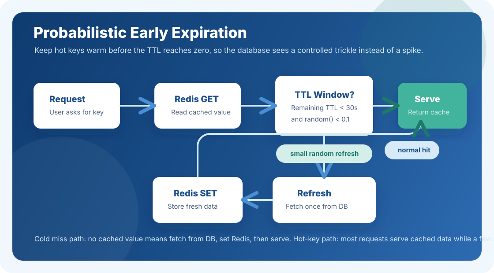

Cache stampede is one of those production problems that sounds small until it arrives with real traffic. The idea is simple: you cache expensive query results in Redis, users get fast responses, and your database stays calm. Everything looks healthy until one popular key expires.
What Actually Happens?
Suppose a Redis key is serving a high-traffic endpoint. At the exact moment the key expires, 5,000 concurrent users request the same data.
The database starts choking, latency explodes, and Redis, which was supposed to shield the database, becomes part of the failure path.
Common Ways to Solve It
There are a few patterns teams commonly use in production systems:
The Clever Approach: Probabilistic Early Expiration
Instead of letting the TTL hit zero for everyone at the same time, a small random percentage of requests proactively refreshes the cache when the key is close to expiry.
- No lock coordination is required.
- Most users keep receiving cached data immediately.
- The database sees a controlled trickle instead of a sudden spike.

Pseudo Code
function get(key, fetchFn, ttl):
cached = redis.GET(key)
if cached exists:
remainingTTL = cached.expiresAt - now()
# When less than 30s remain,
# 10% of requests will refresh early.
if remainingTTL < 30s AND random() < 0.1:
data = fetchFn() # fetch from DB
redis.SET(key, data, ttl) # refresh cache
return data
return cached.data # serve from cache normally
# Cold start: cache is empty.
data = fetchFn()
redis.SET(key, data, ttl)
return dataWhy This Works
For frequently accessed keys, the cache almost never truly expires. As the TTL gets closer to zero, a few requests naturally take responsibility for refreshing it. Everyone else continues to serve from Redis.
The result is a smoother load profile: instead of 5,000 requests hitting the database at once, the database receives a slow, controlled refresh pattern. No complex locking. No waiting queue. Just a small amount of randomness applied at the right time.
When to Use It
This pattern works especially well for hot keys, expensive read queries, dashboard summaries, feed data, recommendation payloads, or any endpoint where stale-for-a-few-seconds is acceptable but a database spike is not.
If the data must be strictly fresh, a lock or write-through strategy may be safer. But for high-read, latency-sensitive systems, probabilistic early expiration is a practical way to keep Redis warm and your database boring.
Back to all posts